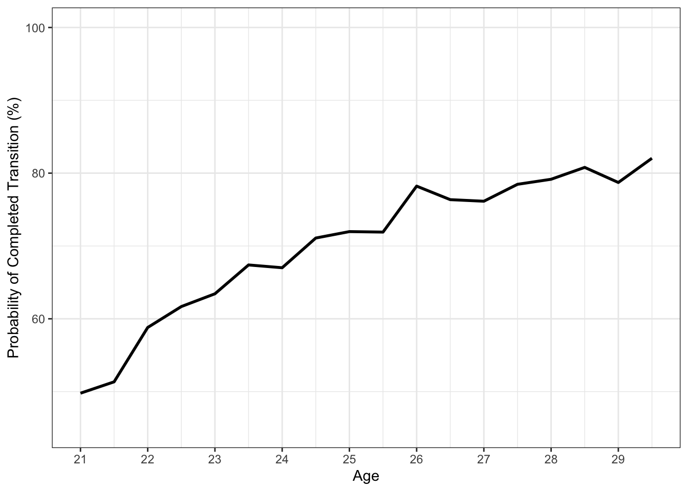

4 Путь от учебы к работе: способствуют ли некогнитивные навыки трудоустройству молодежи?
4.1 Постановка исследовательской задачи
Несмотря на формально высокий уровень образовательных достижений российской молодежи, их интеграция в рынок труда остается затрудненной. Высокие уровни безработицы, частые случаи занятости не по специальности и низкая степень соответствия между полученным образованием и характером работы подчеркивают системные проблемы на этапе перехода от учебы к профессиональной деятельности. На этом фоне особенно остро встает вопрос о том, какие индивидуальные качества молодых людей способствуют более успешной адаптации на рынке труда.
Настоящая глава посвящена анализу роли некогнитивных навыков — компонентов человеческого капитала, ранее недооцененных в экономических исследованиях — в определении качества трудоустройства молодежи. Под качеством занятости в рамках данной главы мы понимаем не только сам факт трудоустройства, но и такие его качественные аспекты, как характер выполняемой работы (умственный или ручной труд) и соответствие уровня квалификации требованиям занимаемой должности [skill mismatch]. Анализ проводится на данных российской молодежи в возрасте 15–29 лет, фокусируясь на индивидуальных особенностях предложения труда.
Согласно официальной статистике, молодежь демонстрирует самые высокие уровни безработицы: в 2022 году они составили 26% среди молодежи в возрасте 15–19 лет, 13,6% среди 20–24-летних и 5,2% среди 25–29-летних. Для сравнения, уровень безработицы среди лиц в возрасте 40–44 лет — минимальный по возрастным когортам — составлял лишь 2,8% (Rosstat, 2024, с. 122). Кроме того, среди выпускников высших учебных заведений 2020–2022 годов, нашедших работу, для 24% занятость не соответствовала полученной специальности, что указывает на явное институциональное противоречие между спросом и предложением на национальном рынке труда. Наконец, официальные данные также свидетельствуют об исключительно высокой пространственной сегрегации: при среднем уровне безработицы по стране в 4% в 2022 году, значения варьировались от 1,6% в Ямало-Ненецком Автономном округе до 30% в Республике Ингушетия.1
Принимая во внимание существующее на макроуровне пространственное неравенство в трудоустройстве, в данной главе фокус сосредоточен не на факторах спроса, а на предложении рабочей силы, ставя во главу угла индивидуальные факторы, влияющие на выход молодежи на рынок труда. Поставленный в главе исследовательский вопрос формулируется следующим образом: влияют ли некогнитивные навыки на успешность выхода молодежи на рынок труда — в терминах занятости, характера труда и соответствия между уровнем образования и выполняемой работой? Если да, то какие именно навыки играют ключевую роль, и как проявляется их эффект в различных социально-экономических контекстах?
В рамках этого общего вопроса решается ряд уточняющих задач:
Определить возраст, при котором вероятность успешного трудоустройства максимальна, что позволит более точно очертить временные границы переходного периода;
Проверить, различается ли влияние некогнитивных навыков в зависимости от стартового социально-экономического статуса (SES), зафиксированного в подростковом возрасте;
Изучить возможные гендерные различия в эффекте некогнитивных навыков, с учетом того, что женщины чаще сталкиваются с барьерами в занятости и заработке;
Оценить, усиливается ли отдача от некогнитивных навыков при наличии высшего образования, что важно для понимания сочетания «мягких» и «жестких» компонентов человеческого капитала.
Существенным вкладом данного исследования является анализ обозначенных исследовательских вопросов в разрезе социально-экономического статуса (СЭС) семьи, зафиксированного на момент достижения индивидом 15-летнего возраста — то есть на начальном этапе перехода от учебы к работе. Такой аналитический ракурс основан на двух ключевых предпосылках. Во-первых, он позволяет учесть влияние стартовых условий на процесс трудоустройства, признавая, что молодежь из более обеспеченных семей изначально обладает более высокой вероятностью занятости. Применение лагированного показателя среднедушевого дохода домохозяйства дает возможность избежать проблемы одновременности [simultaneity bias], акцентируя внимание на ресурсах, реально доступных семье в момент начала трудовой траектории индивида. Во-вторых, исследование направлено на выявление некогнитивных навыков, обладающих наибольшей значимостью для интеграции в рынок труда представителей социально уязвимых групп. Это имеет принципиальное значение для выработки эффективной молодежной политики, направленной на повышение социальной мобильности и расширение возможностей профессиональной реализации молодежи из маргинализированных слоев населения.
Особое внимание в анализе уделяется третьему индикатору качества трудоустройства — вертикальному несоответствию [vertical mismatch] уровня образования выполняемой работе [overeducation], что рассматривается как один из наиболее острых индикаторов неоптимальной утилизации человеческого капитала. В данном исследовании эта проблема анализируется исключительно среди молодежи с высшим образованием, позволяя более точно оценить последствия неиспользования инвестированных ресурсов — как личных, так и семейных.
Таким образом, глава предлагает комплексный подход к пониманию роли некогнитивных навыков в обеспечении успешного перехода от учебы к работе, опираясь на современные вызовы молодежной занятости в России.
4.2 Эконометрическая верификация
zxc
4.3 Результаты
4.3.1 Декомпозиция разброса в занятости
Для подготовки к инференциальному анализу, направленному на оценку влияния некогнитивных навыков на вероятность трудоустройства, были рассчитаны три модели со смешанными эффектами. Первая модель включала только случайные перехваты (intercepts) для возраста, индивидуального идентификатора (для учета респондентов, опрошенных дважды), региона (для контроля несбалансированной вероятности занятости, связанной с территориальной неоднородностью) и уровня завершенного образования (чтобы разделить влияние возраста и уровня образования).
Анализ коэффициентов разложения дисперсии (VPC, variance partitioning coefficients), также известных как коэффициенты внутриклассовой корреляции (ICC), рассчитанных по базовой модели, позволяет выявить ключевые источники вариации в вероятности успешного перехода от учебы к работе. Эти коэффициенты отражают долю общей дисперсии, которая может быть отнесена к соответствующему случайному эффекту.
Таблица 4.1 представляет результаты оценки VPC по базовой модели, которая включает только случайные перехваты. Согласно полученным данным, почти 22% вариации в успешности перехода молодежи от учебы к занятости объясняется возрастом. Эффект завершенного уровня образования составляет около 6% вариации в вероятности трудоустройства. Пространственные различия в доступе к рынку труда, отраженные в региональных случайных эффектах, составляют почти 3% вариации. Остальная часть — примерно 26% дисперсии — обусловлена индивидуальными факторами, не учтенными в модели через включенные случайные эффекты.
4.3.2 Возраст и вероятность трудоустройства
Учитывая значительную роль возрастных различий в базовой вероятности занятости, целесообразно более подробно рассмотреть влияние возраста. Рисунок 4.1 визуализирует эффект возраста на предсказанную вероятность трудоустройства в зависимости от пола, основанный на базовой модели со смешанными эффектами. Поскольку основное внимание уделяется оценке возраста, при котором молодые женщины и мужчины с высшим образованием (т.е. с максимально накопленным человеческим капиталом) с наибольшей вероятностью находят работу, график отражает не константу модели, а условные оценки. В частности, оценки рассчитаны для молодежи в возрасте от 21 до 29 лет, проживающей в городской местности, относящейся к третьему квинтилю по доходу на душу населения (т.е. 41–60-й процентиль), не обучающейся в настоящее время и имеющей завершенное высшее образование. Нижняя граница возраста — 21 год — выбрана в соответствии с теоретическим возрастом получения диплома бакалавра в российской системе образования. Эффекты визуализированы на основе модели 2, представленной в Таблица 4.2.
Как видно на графике, вероятность успешного перехода от учебы к занятости достигает пика в возрасте 26 лет, что указывает на возраст, в котором большинство молодых людей устраиваются на работу. Иными словами, годы, следующие за получением высшего образования, могут быть достаточно сложными для молодежи, поскольку разрыв между окончанием обучения и возрастом наивысшей вероятности трудоустройства составляет около пяти лет.

4.3.3 Влияние некогнитивных навыков на занятость
Хотя данное исследование сосредоточено на оценке влияния некогнитивных навыков на трудоустройство молодежи, оно не может игнорировать другие факторы, также влияющие на вероятность занятости и одновременно связанные с некогнитивными характеристиками. Таблица 4.2 представляет результаты трех моделей со смешанными эффектами, рассчитанных для информирования основного анализа. Как уже отмечалось ранее, первая — базовая модель — включает только случайные перехваты (random intercepts) для возраста, идентификатора индивида и региона. Вторая модель дополняется социодемографическими переменными в фиксированной (неизменяющейся) части: пол, текущее участие в образовании, завершенный уровень образования, квинтиль дохода на душу населения в домохозяйстве на момент начала перехода (т.е. в возрасте 15 или 16 лет), а также тип населенного пункта. Третья модель расширяет вторую за счет добавления некогнитивных характеристик: открытость опыту, добросовестность, экстраверсия, доброжелательность и эмоциональная стабильность.
Прежде чем переходить к интерпретации коэффициентов, целесообразно рассмотреть изменение дисперсии между моделями. В то время как компоненты дисперсии первой модели уже были рассмотрены в одном из предыдущих разделов (а значения стандартного отклонения были преобразованы в доли дисперсии в Таблица 4.1), сравнение второй и третьей моделей позволяет оценить долю дисперсии, объясненную включением в модель пяти некогнитивных характеристик. Так, значение маргинального R-квадрата, отражающее долю дисперсии, объясненную фиксированной частью модели, указывает на то, что некогнитивные навыки объясняют более 1.5% вариативности в переходе от учебы к работе.
Что касается социодемографических переменных, модель не выявила статистически значимого эффекта пола на успех перехода от образования к занятости. Хотя на первый взгляд это может показаться неожиданным, важно учитывать, что в данном анализе не рассматриваются качественные характеристики работы — такие как условия труда или уровень оплаты. Место проживания также не оказывает статистически значимого влияния. Напротив, завершенный уровень образования демонстрирует устойчивое положительное влияние в обеих моделях: более высокий уровень образования увеличивает вероятность трудоустройства. Существенно, что в модели с некогнитивными навыками эффект образования снижается, что свидетельствует о частичном перекрытии этих эффектов — часть влияния некогнитивных характеристик ранее учитывалась через переменную образования. Далее, текущее участие в образовательном процессе снижает вероятность занятости более чем на 14% в обеих моделях. Наконец, социально-экономический статус на момент начала перехода оказывает статистически значимое положительное влияние, подчеркивая значение исходных условий и социального окружения: принадлежность к верхним 20% домохозяйств по доходу на душу населения в возрасте 15–16 лет увеличивает вероятность успешного перехода от учебы к работе почти на 4%.
Что касается некогнитивных навыков, то добросовестность и экстраверсия выступают в качестве двух ключевых характеристик, оказывающих положительное и статистически значимое влияние на занятость. Добросовестность повышает вероятность успешного перехода от учебы к работе на 4.2%, а экстраверсия — на 1.5%.
| Baseline Model | Model with NCS | Model with NCS and controls | |
|---|---|---|---|
| Intercept | 0.395 | -0.444 | 0.299 |
| (0.070) *** | (0.317) | (0.039) *** | |
| age | 0.028 | ||
| (0.029) | |||
| I(age^2) | 0.000 | ||
| (0.001) | |||
| Sex: Male | -0.004 | -0.001 | |
| (0.011) | (0.011) | ||
| Education: Secondary | 0.097 | 0.108 | |
| (0.018) *** | (0.018) *** | ||
| Education: Vocational | 0.149 | 0.160 | |
| (0.018) *** | (0.018) *** | ||
| Education: Tertiary | 0.243 | 0.251 | |
| (0.021) *** | (0.021) *** | ||
| Area: Urban-Type Settlement | 0.017 | 0.015 | |
| (0.028) | (0.028) | ||
| Area: City | 0.013 | 0.011 | |
| (0.022) | (0.022) | ||
| Area: Regional Center | 0.042 | 0.045 | |
| (0.030) | (0.030) | ||
| Currently studying: Yes | -0.134 | -0.145 | |
| (0.016) *** | (0.016) *** | ||
| ses5Q2 | 0.002 | 0.001 | |
| (0.016) | (0.016) | ||
| ses5Q3 | 0.031 | 0.029 | |
| (0.016) + | (0.016) + | ||
| ses5Q4 | 0.010 | 0.013 | |
| (0.018) | (0.018) | ||
| ses5Q5 | 0.038 | 0.039 | |
| (0.018) * | (0.018) * | ||
| Openness | -0.010 | ||
| (0.007) | |||
| Conscientiousness | 0.042 | ||
| (0.006) *** | |||
| Extraversion | 0.015 | ||
| (0.006) * | |||
| Agreeableness | -0.008 | ||
| (0.006) | |||
| Emotional Stability | 0.005 | ||
| (0.006) | |||
| Num.Obs. | 5994 | 5994 | 5994 |
| R2 Marg. | 0.000 | 0.345 | 0.122 |
| R2 Cond. | 0.570 | 0.615 | 0.547 |
| Source: Calculations of the author based on the RLMS data. | |||
Последующие модели, аналогично третьей модели в Таблица 4.2, поочередно исключают одну из фиксированных переменных и рассматривают её в качестве группирующего фактора для случайных наклонов (random slopes) некогнитивных навыков. Таким образом, были рассчитаны ещё три модели, исследующие влияние некогнитивных навыков на вероятность занятости с учетом квинтиля дохода на душу населения (Модель 4), завершенного уровня образования (Модель 5) и пола (Модель 6). В то время как фиксированная часть моделей представлена в Таблица 4.3, основной акцент анализа смещается на варьирующиеся коэффициенты некогнитивных характеристик в рамках выделенных групп. Эти различия подробно рассматриваются в следующих трех разделах.
| Model with SES | Model with Education | Model with Sex | |
|---|---|---|---|
| Intercept | -0.419 | -0.355 | -0.435 |
| (0.311) | (0.317) | (0.310) | |
| age | 0.029 | 0.033 | 0.030 |
| (0.028) | (0.028) | (0.028) | |
| I(age^2) | 0.000 | 0.000 | 0.000 |
| (0.001) | (0.001) | (0.001) | |
| Sex: Male | -0.001 | -0.002 | |
| (0.011) | (0.011) | ||
| Education: Secondary | 0.092 | 0.090 | |
| (0.018) *** | (0.018) *** | ||
| Education: Vocational | 0.143 | 0.141 | |
| (0.018) *** | (0.018) *** | ||
| Education: Tertiary | 0.240 | 0.236 | |
| (0.021) *** | (0.021) *** | ||
| Currently studying: Yes | -0.134 | -0.136 | -0.135 |
| (0.016) *** | (0.016) *** | (0.016) *** | |
| Area: Urban-Type Settlement | 0.015 | 0.015 | 0.014 |
| (0.027) | (0.027) | (0.027) | |
| Area: City | 0.014 | 0.012 | 0.013 |
| (0.022) | (0.022) | (0.022) | |
| Area: Regional Center | 0.047 | 0.045 | 0.045 |
| (0.030) | (0.030) | (0.030) | |
| Openness | -0.010 | -0.010 | -0.010 |
| (0.007) | (0.008) | (0.007) | |
| Conscientiousness | 0.042 | 0.041 | 0.041 |
| (0.007) *** | (0.007) *** | (0.014) ** | |
| Extraversion | 0.016 | 0.015 | 0.015 |
| (0.007) * | (0.006) * | (0.008) + | |
| Agreeableness | -0.007 | -0.008 | -0.008 |
| (0.007) | (0.006) | (0.008) | |
| Emotional Stability | 0.005 | 0.006 | 0.005 |
| (0.010) | (0.007) | (0.008) | |
| ses5Q2 | 0.001 | 0.001 | |
| (0.016) | (0.016) | ||
| ses5Q3 | 0.029 | 0.030 | |
| (0.016) + | (0.016) + | ||
| ses5Q4 | 0.014 | 0.014 | |
| (0.018) | (0.017) | ||
| ses5Q5 | 0.039 | 0.039 | |
| (0.018) * | (0.018) * | ||
| Num.Obs. | 5994 | 5994 | 5994 |
| R2 Marg. | 0.476 | 0.372 | 0.478 |
| Source: Calculations of the author based on the RLMS data. | |||
4.3.4 Начальные условия имеют значение: навыки дают разные эффекты в зависимости от социально-экономического статуса
На основе рассчитанной смешанной модели с варьирующимися коэффициентами наклона (random slopes) для некогнитивных навыков, Рисунок 4.2 визуализирует изменения коэффициентов наклона некогнитивных навыков по квинтилям дохода домохозяйства на душу населения в начале перехода от учебы к работе, то есть в возрасте 15–16 лет. Как уже отмечалось, это было сделано для учета начальных условий, предшествующих выходу на рынок труда, а также для устранения обратной причинности между доходом домохозяйства и вкладом самих работающих респондентов в этот доход (то есть, когда трудоустроенные молодые люди увеличивают совокупный доход семьи своими заработками).
В соответствии с предыдущим анализом, модель, оценивающая эти эффекты, показывает значимое влияние только двух характеристик — добросовестности и экстраверсии. При этом видно, что отдача от этих навыков выше в группах с уровнем дохода выше медианного. Например, эффект экстраверсии практически отсутствует для молодежи из 20% наименее обеспеченных домохозяйств (менее 1%). В то же время он составляет 2.92% для молодых людей из четвёртого квинтиля и 1.75% — для представителей верхних 20% по уровню дохода на душу населения. Несмотря на то, что добросовестность демонстрирует более высокие по величине эффекты, она также подчиняется той же закономерности: молодые люди из более обеспеченных семей получают от этого навыка большую отдачу.
Полученные результаты вызывают обеспокоенность по поводу перспектив социальной мобильности, указывая на то, что молодёжь из более состоятельных семей имеет преимущество в успешном завершении перехода от учебы к работе.
4.3.5 Повышает ли уровень образования эффект от некогнитивных навыков на занятость?
Одним из исследовательских вопросов настоящего исследования было выяснение того, усиливает ли уровень образования эффект от некогнитивных навыков на вероятность занятости. На основе шестой смешанной модели были рассчитаны варьирующиеся коэффициенты наклона (random slopes) для некогнитивных навыков в разрезе уровней образования, полученных респондентами. Рисунок 4.3 визуализирует данные эффекты.
Так как модель выявила значимое влияние добросовестности и экстраверсии, результаты показывают, что влияние этих навыков существенно различается в зависимости от уровня образования. В частности, эффект добросовестности последовательно увеличивается с ростом уровня образования, положительно влияя на вероятность трудоустройства. Так, для молодежи без завершенного среднего образования эффект составляет 4.01%, тогда как для обладателей высшего образования он возрастает до 4.66%.
Противоположная закономерность наблюдается в случае экстраверсии: её влияние оказывается более значимым для молодежи с низким уровнем образования. Эффект экстраверсии для респондентов без среднего образования составляет 1.52%, тогда как для молодежи с высшим образованием он снижается до 1.23%. Другими словами, социальные навыки играют более важную роль в занятости молодежи без академических квалификаций высокого уровня.
4.3.6 Могут ли некогнитивные навыки сократить гендерный разрыв в занятости?
В то время как проведённый анализ показал, что у молодых женщин ниже шансы найти работу и войти в мир труда, последняя регрессионная модель проверяет, могут ли некогнитивные навыки способствовать сокращению гендерного разрыва в занятости. Рисунок 4.4 визуализирует эффекты некогнитивных навыков на занятость, рассчитанные на основе варьирующихся коэффициентов (random slopes) этих навыков по полу.
Хотя модель, из которой были получены эти коэффициенты, также указывает на статистически значимое влияние добросовестности и экстраверсии, первый навык оказывает большее влияние на занятость молодых мужчин. В частности, увеличение добросовестности на 1 стандартное отклонение повышает вероятность занятости для мужчин на 5.53%, тогда как для женщин – лишь на 2.77%. Другими словами, добросовестность приносит молодым мужчинам значительно больший эффект в плане занятости, чем их сверстницам.
Важно отметить, что экстраверсия демонстрирует противоположную закономерность. Хотя как само её влияние, так и гендерный разрыв в этом влиянии меньше, чем в случае добросовестности, увеличение экстраверсии на 1 стандартное отклонение повышает вероятность занятости у женщин на 1.92 процентных пункта, в то время как у мужчин — на 1.04 п.п. Это указывает на то, что экстраверсия является тем некогнитивным навыком, который может способствовать сокращению гендерного разрыва в занятости.
4.3.7 Некогнитивные навыки и характер труда
Целью данного раздела является оценка влияния некогнитивных навыков на выбор характера трудовой деятельности среди молодежи. В частности, исследуется, связаны ли определённые некогнитивные характеристики с профессиональной ориентацией в пользу умственного труда по сравнению с физическим. Для классификации профессий используется Международная стандартная классификация занятий (МСКЗ-08), согласно которой все профессии условно распределяются на четыре группы в зависимости от характера труда и уровня квалификации:
- высококвалифицированные специалисты, занятые преимущественно умственным трудом (группы 1, 2 и 3 МСКЗ-08) [high-skilled white collar];
- работники с более низким уровнем квалификации, также занятые умственным трудом [low-skilled white collar];
- квалифицированные работники, занятые физическим трудом [high-skilled blue collar];
- низкоквалифицированные рабочие, выполняющие физическую работу [low-skilled blue collar].
Следуя методологическому подходу, представленному в классическом исследовании Heckman и др. (2006), мы проверяем, коррелируют ли некогнитивные навыки молодежи с выбором профессий, требующих высококвалифицированного умственного труда - этому посвящена основная модель. В расширенной модели дополнительно учитываются стартовые социально-экономические условия: коэффициенты наклона для некогнитивных навыков варьируются в зависимости от квинтиля среднедушевого дохода домохозяйстве когда индивид был в возрасте 15–16 лет. Такой подход позволит в полной мере нейтрализовать эффект потенциальных стартовых преимуществ молодежи из более богатых семей на возможности выбора характера труда и профессии. Результаты моделей представлены в Таблица 4.4.
| White Collar (High-Skilled) | White Collar (High-Skilled) by SES | |
|---|---|---|
| Intercept | 0.451 | 0.481 |
| (0.418) | (0.283) + | |
| age | -0.047 | -0.048 |
| (0.014) *** | (0.014) *** | |
| I(age^2) | 0.001 | 0.001 |
| (0.000) *** | (0.000) *** | |
| Sex: Male | -0.055 | -0.055 |
| (0.010) *** | (0.010) *** | |
| Education: Secondary | -0.017 | -0.014 |
| (0.548) | (0.333) | |
| Education: Vocational | 0.115 | 0.117 |
| (0.548) | (0.333) | |
| Education: Tertiary | 0.307 | 0.311 |
| (0.548) | (0.333) | |
| Area: Urban-Type Settlement | 0.036 | 0.044 |
| (0.022) + | (0.021) * | |
| Area: City | -0.010 | -0.008 |
| (0.015) | (0.013) | |
| Area: Regional Center | 0.010 | 0.012 |
| (0.015) | (0.012) | |
| ses5Q2 | -0.001 | |
| (0.013) | ||
| ses5Q3 | 0.016 | |
| (0.014) | ||
| ses5Q4 | 0.011 | |
| (0.015) | ||
| ses5Q5 | 0.055 | |
| (0.015) *** | ||
| Currently studying: Yes | -0.030 | -0.029 |
| (0.013) * | (0.013) * | |
| Openness | 0.015 | 0.017 |
| (0.006) ** | (0.006) ** | |
| Conscientiousness | 0.017 | 0.017 |
| (0.005) ** | (0.006) ** | |
| Extraversion | 0.006 | 0.006 |
| (0.005) | (0.006) | |
| Agreeableness | 0.003 | 0.004 |
| (0.005) | (0.006) | |
| Emotional Stability | 0.001 | 0.000 |
| (0.005) | (0.008) | |
| Num.Obs. | 5994 | 5994 |
| R2 Marg. | 0.097 | 0.206 |
| R2 Cond. | 0.640 | |
| Source: Calculations of the author based on the RLMS data. | ||
Первая модель, контролирующая квинтиль среднедушевого дохода в начале транзиции от учебы к работе показывает, что принадлежность к 20% наиболее обеспеченных домохозяйств статистически значимо увеличивает вероятность занятости в сфере высококвалифицированного умственного труда на 5.5%. Этот результат подчеркивает необходимость учета социально-экономического неравенства при анализе влияния индивидуальных характеристик на профессиональный выбор, что и реализовано во второй модели.
В отношении некогнитивных навыков обе модели выявляют положительный и статистически значимый эффект открытости новому опыту и добросовестности на вероятность занятости в высококвалифицированной умственной сфере. Несмотря на умеренную величину эффекта (около 1.5 процентных пунктов), его стабильность в разных спецификациях подтверждает надежность результатов. Визуализация варьирующихся коэффициентов некогнитивных навыков в зависимости от квинтиля среднедушевого дохода представлена на Рисунок 4.5.
Результаты, представленные на Рисунок 4.5, ясно указывают на выраженную гетерогенность эффектов открытости к новому опыту и добросовестности на вероятность занятости в качестве высококвалифицированного специалиста, выполняющего преимущественно умственный труд. Более того, наблюдается четкий социально-экономический градиент: влияние данных некогнитивных навыков оказывается существенно более выраженным среди молодежи, происходящей из семей с более высоким уровнем дохода.
В частности, эффект открытости демонстрирует монотонный рост в зависимости от уровня среднедушевого дохода домохозяйства: от 1.2% среди представителей наименее обеспеченной квинтильной группы до почти 2.5% среди молодежи из 20% самых обеспеченных семей. Это свидетельствует о том, что открытость как личностное качество, связанное с любознательностью, креативностью и готовностью воспринимать новое, конвертируется в конкурентное преимущество на рынке труда, особенно для тех, кто изначально обладает лучшими стартовыми возможностями.
Хотя эффект добросовестности не демонстрирует такой же монотонности, он также оказывается более выраженным в доходных квинтилях выше среднего. Так, коэффициенты для третьего и четвертого квинтилей составляют 2.26% и 1.5% соответственно, тогда как для первого и второго — 1.43% и 1.77%. Это может указывать на то, что такие качества, как организованность, ответственность и стремление выполнять работу качественно, особенно ценятся в профессиональной среде, к которой молодежь из семей с более высоким СЭС имеет больший доступ — как за счет социальных сетей, так и за счет культурного и образовательного капитала семьи.
Таким образом, полученные результаты подчеркивают не только значимость некогнитивных навыков для успешной интеграции в сегмент высококвалифицированного умственного труда, но и важность учета социально-экономического контекста, в котором данные навыки реализуются. Это подтверждает необходимость дифференцированного подхода к разработке молодежной политики, направленной на компенсацию структурных неравенств в доступе к «качественной» занятости.
4.3.8 Влияют ли некогнитивные способности на выбор занятости выпускников с высшим образованием в менее квалифицированных должностях?
В данной секции исследования мы сужаем фокус со всей молодежи до только той которая имеет высшее образование. с учетом того что выход на рынок труда
Linear mixed model fit by REML. t-tests use Satterthwaite's method [
lmerModLmerTest]
Formula: skill_mismatch_overeduc ~ 1 + age + I(age^2) + sex + area + ses5 +
O + C + E + A + ES + (1 | region) + (1 | idind)
Data: youth_empl_suppl[youth_empl_suppl$edu_lvl == "4. Tertiary", ]
REML criterion at convergence: 1752.1
Scaled residuals:
Min 1Q Median 3Q Max
-1.7238 -0.6151 -0.3569 0.7657 1.6981
Random effects:
Groups Name Variance Std.Dev.
idind (Intercept) 0.095170 0.30850
region (Intercept) 0.001143 0.03381
Residual 0.135480 0.36808
Number of obs: 1252, groups: idind, 1001; region, 38
Fixed effects:
Estimate Std. Error df t value Pr(>|t|)
(Intercept) 5.306430 1.679314 910.695289 3.160 0.00163 **
age -0.334008 0.129513 900.860712 -2.579 0.01007 *
I(age^2) 0.005712 0.002483 892.793587 2.300 0.02165 *
sexMale 0.089275 0.032061 986.029639 2.785 0.00546 **
areaUrban-Type Settlement -0.012241 0.076546 456.110870 -0.160 0.87302
areaCity -0.031938 0.050464 127.422925 -0.633 0.52793
areaRegional Center -0.071489 0.046664 68.802182 -1.532 0.13011
ses5Q2 -0.078386 0.049530 952.001714 -1.583 0.11385
ses5Q3 -0.036612 0.046962 971.300753 -0.780 0.43582
ses5Q4 -0.046176 0.047056 962.427515 -0.981 0.32669
ses5Q5 -0.110412 0.045349 866.146423 -2.435 0.01510 *
O -0.036394 0.017932 934.046773 -2.030 0.04268 *
C -0.029377 0.016691 878.415574 -1.760 0.07875 .
E 0.011522 0.016018 969.562862 0.719 0.47210
A -0.004470 0.016049 940.852526 -0.279 0.78068
ES 0.007506 0.015641 980.046020 0.480 0.63139
---
Signif. codes: 0 '***' 0.001 '**' 0.01 '*' 0.05 '.' 0.1 ' ' 14.4 Обсуждение
Результаты данного исследования подчеркивают ряд ключевых аспектов, заслуживающих внимания. Прежде всего, важно отметить поздний выход молодежи на рынок труда, даже при наличии диплома о высшем образовании. Так, наибольшая вероятность трудоустройства наблюдается в возрасте 26 лет — через пять лет после теоретического срока завершения высшего образования в России. Это свидетельствует о наличии значительных трудностей у молодых людей на пути к трудоустройству сразу после окончания вуза.
Во-вторых, наличие диплома о высшем образовании не дает существенного преимущества в получении работы по сравнению с молодежью, окончившей только среднюю школу или получившей среднее профессиональное образование. Преимущество наблюдается лишь по сравнению с теми, кто не имеет образования вообще. Однако это скорее связано с ограничениями оценки, поскольку верификационная модель не учитывает качественные характеристики занятости, такие как профессия, занимаемая должность, удовлетворенность работой и т.д., фокусируясь исключительно на факте занятости. Предыдущие исследования действительно указывают на наличие премии за высшее образование (Rozhkova & Roshchin, 2021), но также отмечается, что несмотря на исторический рост, отдача от высшего образования в России остается значительно ниже среднемирового уровня (Melianova и др., 2021). При этом подчеркивается, что предложение человеческого капитала, формируемого национальной системой образования, существует независимо от качества институтов рынка труда (Gimpelson, 2016).
Исследование также показало, что принадлежность к более состоятельным домохозяйствам существенно повышает шансы молодежи на успешное трудоустройство. При этом для оценки социально-экономического положения использовался лагированный показатель: учитывался доход домохозяйства в тот момент, когда индивидам было 15–16 лет, то есть на этапе формирования их стартовых условий, задолго до выхода на рынок труда. Такой подход позволяет избежать эффекта одновременности и надежнее выявить влияние исходного социально-экономического статуса. Результаты показывают, что даже при контроле наличия диплома о высшем образовании стартовый социально-экономический ресурс оказывает устойчивое положительное влияние на шансы трудоустройства. Это подчеркивает, что одного получения образования недостаточно для полного преодоления исходного неравенства: молодежь из более обеспеченных семей обладает дополнительными преимуществами в доступе к трудовым возможностям. Данный эффект объясняется концепцией социального капитала (Bourdieu, 2018), которая акцентирует роль неформальных связей, социальных сетей и скрытых механизмов поддержки, доступных преимущественно представителям более высоких социальных слоев. Личные связи, знание негласных правил и возможности доступа к более качественным вакансиям ускоряют процесс трудоустройства для молодежи из благополучных семей, что, в свою очередь, способствует воспроизводству существующих структур социальной неравенства на рынке труда.
Из пяти изученных некогнитивных характеристик две доказали свою эффективность в облегчении перехода от учебы к работе: добросовестность и экстраверсия. Добросовестность показала наиболее стабильный и сильный эффект во всех моделях. Однако влияние этих характеристик носит гетерогенный характер и зависит от пола, начальных социально-экономических условий и уровня образования.
Так, добросовестность и экстраверсия более полезны для молодежи из домохозяйств, входящих в 40% с наивысшими доходами. При этом развитие добросовестности усиливает гендерный разрыв в пользу мужчин, тогда как развитие экстраверсии может способствовать сокращению гендерного разрыва в занятости. Это соответствует предыдущим исследованиям, которые отмечают важную роль экстраверсии в участии женщин в рабочей силе и в достижении лидерских позиций (Lemoine и др., 2016; Wichert & Pohlmeier, 2010).
Что касается уровня образования, добросовестность в большей степени способствует трудоустройству молодых людей с высшим образованием, тогда как экстраверсия оказывает большее влияние на молодежь без высшего образования. Эти результаты поднимают важные вопросы о связи между образованием, навыками и результатами на рынке труда, указывая на ограниченность роли высшего образования в формировании и использовании некогнитивных навыков.
Несмотря на то, что влияние высшего образования на развитие некогнитивных навыков редко рассматривается в экономической литературе, существующие исследования показывают, что период обучения в вузе не оказывает существенного влияния на развитие этих навыков (Kassenboehmer и др., 2018; Sanginabadi, 2020). В более общем плане, результаты настоящего исследования свидетельствуют о том, что молодежь с более высокими образовательными квалификациями в меньшей степени извлекает выгоду из своих некогнитивных навыков по сравнению с менее квалифицированными сверстниками, что указывает на необходимость переосмысления роли высшего образования в политике занятости.
4.5 Ограничения
4.6 Рекомендации
Полученные результаты имеют важные последствия для формирования государственной политики в области молодежной занятости. Комплексный подход, включающий развитие некогнитивных навыков в образовательной системе, поддержку уязвимых групп молодежи и стимулирование развития социального капитала, может способствовать улучшению показателей занятости и сокращению неравенства на этапе входа на рынок труда.
Во-первых, включение в школьные и вузовские программы обучения компонентов, направленных на развитие добросовестности и коммуникативных навыков, может повысить конкурентоспособность молодых людей. В частности, акцент на развитие экстраверсии у девушек может способствовать сокращению гендерного разрыва в занятости.
Во-вторых, вузы могут играть ключевую роль в формировании социального капитала молодежи, особенно из малообеспеченных семей. Организация стажировок, программ наставничества и развития сетей контактов должна быть интегрирована в учебные программы.
Для поощрения работодателей к инвестициям в развитие некогнитивных навыков могут быть использованы налоговые льготы, субсидии и другие меры поддержки. Это позволит создать культуру развития навыков и увеличить продуктивность работников, особенно среди молодежи из социально уязвимых групп.
Наконец, развитие государственно-частного партнерства может способствовать успешной реализации программ поддержки молодежной занятости. Объединение усилий государства, учебных заведений, госкорпораций и частного сектора позволит создать более инклюзивный рынок труда.
4.7 Выводы
Настоящее исследование подтверждает значимость некогнитивных навыков в повышении шансов трудоустройства среди молодежи в России. Добросовестность и экстраверсия оказались наиболее значимыми характеристиками, особенно в контексте гендерного и социального неравенства. Развитие этих навыков, особенно среди уязвимых групп, может стать эффективным инструментом социальной мобильности.
Однако для более глубокого понимания взаимосвязи между образованием, некогнитивными навыками и результатами на рынке труда, будущие исследования должны учитывать как качественные (профессия, занимаемая должность, удовлетворенность работой), так и количественные (заработная плата) аспекты перехода от учебы к работе.
Данные Росстата были получены 24 сентября 2024 года по следующей ссылке: https://rosstat.gov.ru/storage/mediabank/Trud_3_15-s.xlsx↩︎